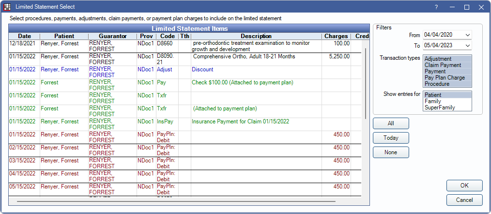

Limited Statement
If a patient needs a statement for specific transactions or procedures, a Limited or Limited (Custom) Statement can be generated.
In the Account Module toolbar, click the Statement dropdown, Limited or Limited (Custom).

There are two options for creating limited statements: Limited and Limited (Custom).
- Limited: Shows transactions associated with selected procedures, pay plan debits, patient payments, insurance payments, and adjustments.
- Limited (Custom): Opens the Limited Statement Select window to select procedures, pay plan debits, patient payments, insurance payments, and adjustments.
Limited
In the Account Module, highlight procedures, Pay Plan Debits, patient payments, insurance payments, and adjustments. Then in the Statement dropdown, click Limited.

The Statement options window will open. Select options for the limited statement. Most options match the Statement Window.
- Exclude income transfers: Specific to limited statements. Check to exclude income transfers from appearing on the statement.
If a limited statement is created from a non-guarantor family member, the family member contact information is used, and the statement is saved to the family member's account. If a limited statement is created from Entire Family, the guarantor's contact information is used, and the statement is saved to the gurantor's account.
Limited (Custom)
In the Statement dropdown, click Limited (Custom).
The Limited Statement Select window will open. Select filters, then highlight the transactions to show. Click OK to continue to the Statement window.
Filters: Set filters to determine items in the Limited Statement Items grid.
- From/To: Enter date range of transactions to display.
- Transaction Types: Highlight transaction types to show.
- Show entries for: Highlight whose account items appear in the grid. Also determine whose name and address appear on the statement. SuperFamily option is only available when the selected patient is a member of a Super Family and Included in Super Family Billing is checked in Edit Patient Information.
- When Patient is selected, the patient's name appears on the statement. The family guarantor's address is used. The statement is saved to the patient's account
- When Family is selected, the guarantor's name and address appear on the statement. The statement is saved to the family guarantor's account.
- When SuperFamily is selected, the Super Family head's name and address appear on the statement. The statement is saved to the Super Family head, family guarantor, and patient accounts.
All: Select all transactions displayed in the grid.
Today: Select all displayed transactions with today's date.
None: Deselect all currently selected transactions.
Click OK to generate limited statement for selected transactions.
Customize the columns that appear in the Limited Statement Items grid from Display Fields. The columns that appear in the grid do not reflect the the columns that appear on the StatementMain Sheet Grid.
The statement does not include aging or payment plan information. The total due, insurance estimate, and balance information is based on the items in the statement only.